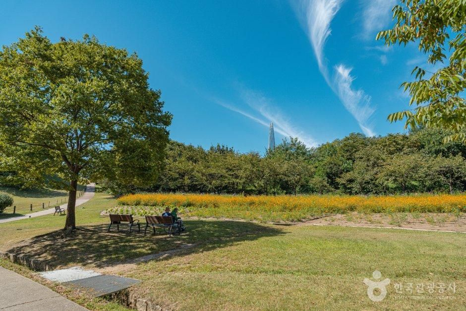
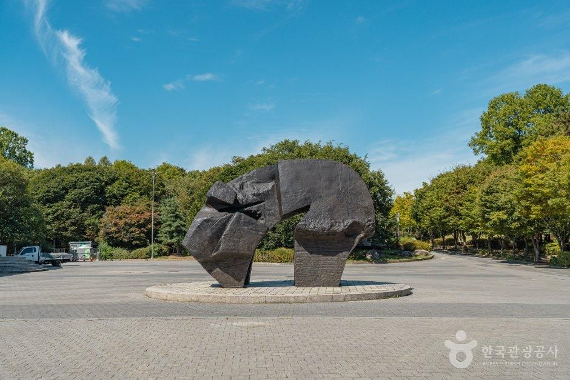
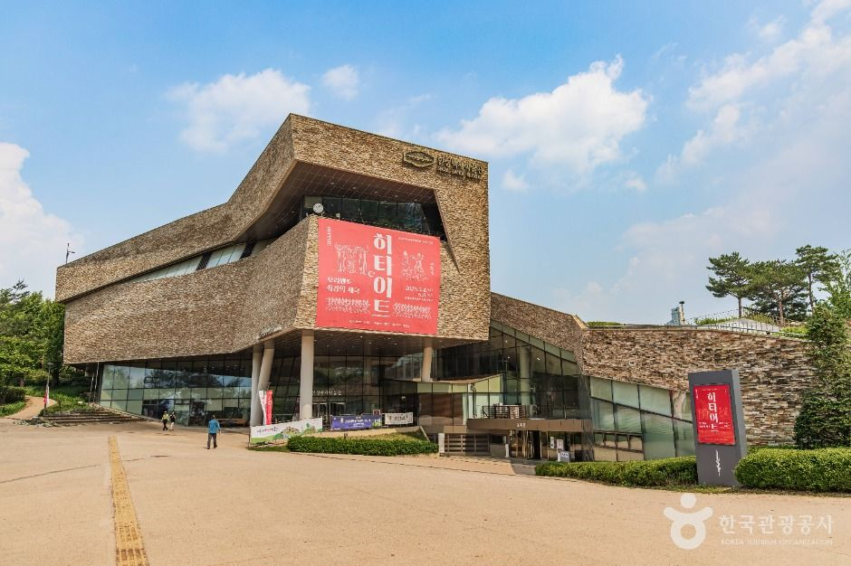
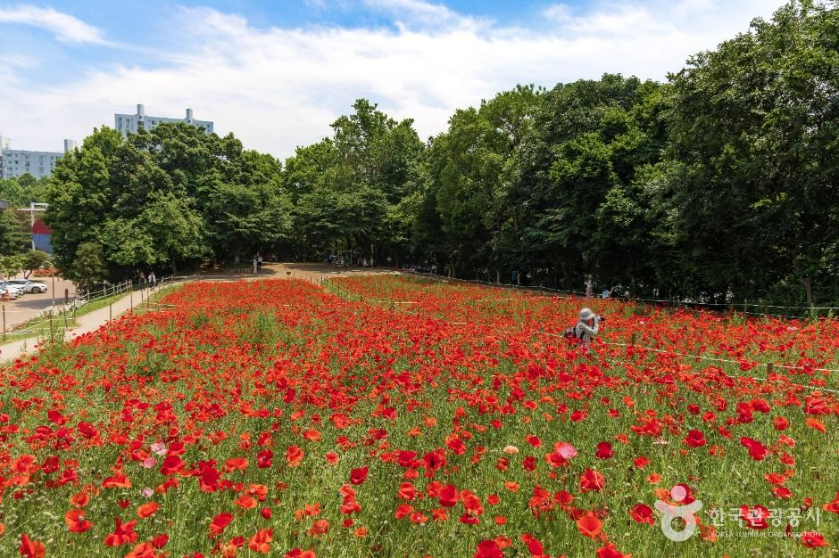
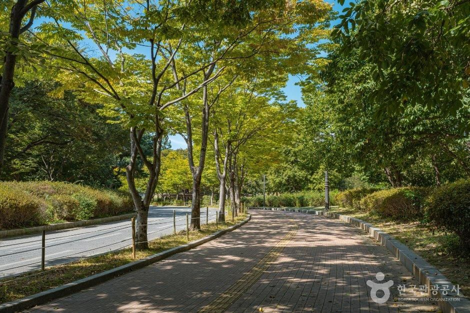

Hanseong Baekje Cultural Festival Guide: Overview
This Hanseong Baekje Cultural Festival guide covers Songpa-gu's flagship autumn festival, held every year at Olympic Park in Seoul. The festival celebrates Hanseong, the first capital of the ancient Baekje kingdom, which stood around today's Songpa area roughly 2,000 years ago — the earthen walls of Mongchontoseong are still inside the park.
Today the festival mixes that history with modern Seoul: classical and gugak (Korean traditional music) concerts, K-pop and hip-hop acts, drone shows, a food market and hands-on activities for children. Entry is free, and it is one of the easiest big local festivals for visitors to reach by subway.

What Happened at the 26th Festival (October 23–25, 2026)
The 2026 theme was "Brilliant Culture, Deep Resonance, United as One" (찬란한 문화, 깊은 울림, 하나된 우리). Songpa-gu built its largest-ever stage, a 60-metre multi-level main stage with giant LED screens, according to Yonhap News.
- Opening night (Fri, Oct 23, 19:00): a "Welcome Drone Show" of 900 drones drawing Songpa's mascots Haha and Hoho, followed by the Songpa-gu orchestra with a large choir, three tenors and guest artists.
- Day 2 (Sat, Oct 24): a musical gala based on the Baekje-era Domi Naru legend, then the Hanmaeum Eoulmadang residents' stage from 16:50, where teams from Songpa's 27 neighbourhoods perform.
- Closing night (Sun, Oct 25, 19:00): the Hanseong Culture Concert, featuring a 30-player geomungo ensemble with a band, pansori singers, fusion gugak and K-pop acts.
- All three days: an experience village (10:00–19:00) with Baekje costume rental and crafts, a Hanseong Baekje Kids Café, and the Hanseong Baekje food market (11:00–21:00).


Olympic Park: The Festival Venue All Year
Even outside festival week, Olympic Park is one of Seoul's best green spaces for visitors. Built for the 1988 Summer Olympics, it combines wide lawns, sculpture gardens and the remains of the Baekje-era Mongchontoseong earthen fortress. In late spring the Deulkkotmaru hills turn red with poppies, and in autumn the tree-lined paths turn gold.
Right next to the park, the Seoul Baekje Museum (한성백제박물관) explains Baekje history and is a natural pairing with the festival.


Visitor Information
| Item | Details |
|---|---|
| Festival | Hanseong Baekje Cultural Festival (한성백제문화제), 26th edition |
| 2026 dates | Fri, Oct 23 – Sun, Oct 25, 2026 (annual, autumn) |
| Venue | 88 Lawn area, Olympic Park, 424 Olympic-ro, Songpa-gu, Seoul |
| Admission | Free; some hands-on programmes charge a fee |
| 2026 times | Experience village 10:00–19:00; food market 11:00–21:00; opening and closing shows 19:00 |
| Subway | Olympic Park Station (Lines 5 & 9), Exits 3–4, about 5 min walk |
| Organiser | Songpa-gu Office; enquiries +82-2-2147-2800 |
| Olympic Park hours | Open all year; walking and cycling 05:00–22:00 (vehicles 06:00–22:00), per KTO |
| Olympic Park info | +82-2-410-1114 |
Sources: Songpa-gu official festival website, the Seoul Metropolitan Government festival portal (Fun Seoul), Yonhap News (October 12, 2026) and Korea Tourism Organization data for Olympic Park. Photos © Korea Tourism Organization (KOGL Type 1, attribution). No AI-generated images. Dates and programmes change every year — confirm before you go.
Getting There
Take Seoul Subway Line 5 or Line 9 to Olympic Park Station and use Exit 3 or 4; the 88 Lawn is about a five-minute walk. Mongchontoseong Station (Line 8) and Jamsil (Lines 2 and 8) are other options if you want to walk through more of the park. Driving is not recommended during the festival — the area gets very busy. Search 올림픽공원 88잔디마당 in Naver Map or Kakao Map for the most reliable directions.
Tips for Visiting
- Arrive early for the night shows: the drone show and headline concerts draw big crowds to the lawn; bring a picnic mat.
- Dress in layers: late-October evenings in Seoul drop to around 10°C.
- Go in the afternoon with kids: the experience village and kids café run in daylight hours.
- Bring cash and a card: most market stalls take cards, but small booths may prefer cash.
- Add the museum: the Seoul Baekje Museum next to the park gives context before the show.
How It Compares with Other Seoul Autumn Festivals
| Hanseong Baekje Cultural Festival | Sungnyemun Gate Guard Ceremony | Seoul Lantern Festival | |
|---|---|---|---|
| Area | Olympic Park, Songpa-gu | Sungnyemun, Jung-gu | Cheonggyecheon, central Seoul |
| Type | 3-day history and music festival | Short daily heritage ceremony | Light installations |
| Cost | Free | Free | Free |
| Best for | Families, concerts, drone show | Quick heritage photo stop | Evening walks |
Who It Suits
- Great for: Families who want free performances, crafts and food in one park.
- Great for: Visitors staying in Jamsil or Gangnam who want a local Seoul festival, not a tourist show.
- Great for: History fans curious about the Baekje kingdom.
- Less ideal: Travellers who dislike crowds — visit Olympic Park on a quiet weekday instead.
Plan Your Seoul Trip
Hanseong Baekje Cultural Festival FAQ
When is the Hanseong Baekje Cultural Festival held?
It is an annual autumn festival run by Songpa-gu. The 26th edition took place from Friday, October 23 to Sunday, October 25, 2026. Songpa-gu announces the next year's dates on the official festival site (songpa.go.kr/hanseong), usually a few weeks ahead.
Where does it take place?
At the 88 Lawn (88잔디마당) area of Olympic Park, 424 Olympic-ro, Songpa-gu, Seoul. The nearest stop is Olympic Park Station (Lines 5 and 9), Exits 3 and 4, about a 5-minute walk according to the Seoul festival portal.
Is it free?
Yes. Entry and the opening and closing performances were free in 2026. Some hands-on programmes charged a small fee, which varied by activity.
What were the main programmes in 2026?
An opening show on October 23 at 19:00 with a 900-drone light show, a residents' stage called Hanmaeum Eoulmadang on October 24 from 16:50, and the Hanseong Culture Concert closing show on October 25 at 19:00. The experience village ran 10:00–19:00 and the Hanseong Baekje food market 11:00–21:00.
What can I do at Olympic Park outside festival dates?
Olympic Park is open all year with no closing day; KTO lists walking and cycling access from 05:00 to 22:00. Walk the Mongchontoseong earthen fortress, see the poppy and wildflower hills at Deulkkotmaru in season, and visit the Seoul Baekje Museum (한성백제박물관) next to the park.